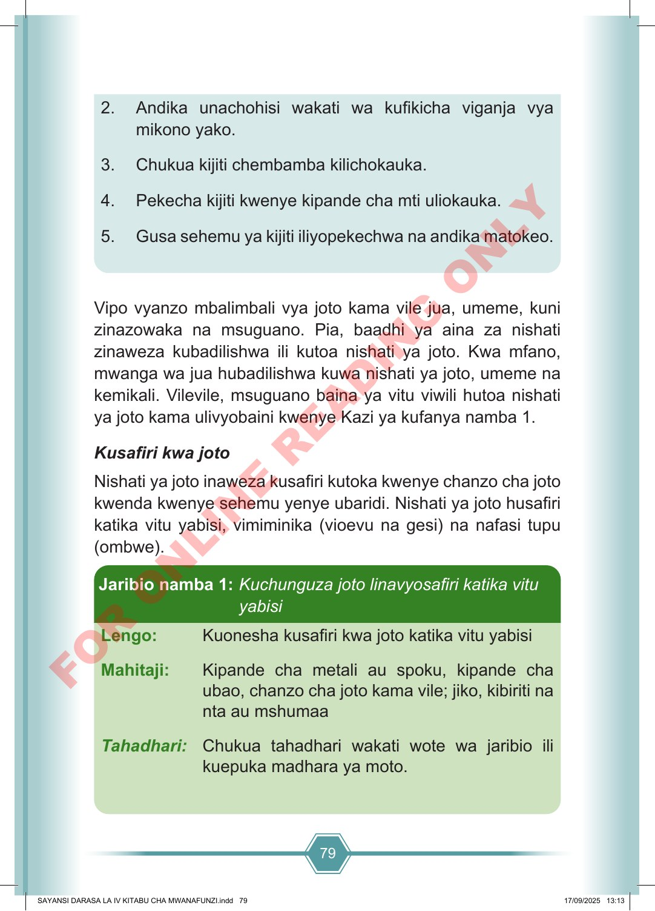

79 2. Andika unachohisi wakati wa kufikicha viganja vya mikono yako. 3. Chukua kijiti chembamba kilichokauka. 4. Pekecha kijiti kwenye kipande cha mti uliokauka. 5. Gusa sehemu ya kijiti iliyopekechwa na andika matokeo. Vipo vyanzo mbalimbali vya joto kama vile jua, umeme, kuni zinazowaka na msuguano. Pia, baadhi ya aina za nishati zinaweza kubadilishwa ili kutoa nishati ya joto. Kwa mfano, mwanga wa jua hubadilishwa kuwa nishati ya joto, umeme na kemikali. Vilevile, msuguano baina ya vitu viwili hutoa nishati ya joto kama ulivyobaini kwenye Kazi ya kufanya namba 1. Kusafiri kwa joto Nishati ya joto inaweza kusafiri kutoka kwenye chanzo cha joto kwenda kwenye sehemu yenye ubaridi. Nishati ya joto husafiri katika vitu yabisi, vimiminika (vioevu na gesi) na nafasi tupu (ombwe). Lengo: Kuonesha kusafiri kwa joto katika vitu yabisi Mahitaji: Kipande cha metali au spoku, kipande cha ubao, chanzo cha joto kama vile; jiko, kibiriti na nta au mshumaa Tahadhari: Chukua tahadhari wakati wote wa jaribio ili kuepuka madhara ya moto. Jaribio namba 1: Kuchunguza joto linavyosafiri katika vitu yabisi SAYANSI DARASA LA IV KITABU CHA MWANAFUNZI.indd 79 SAYANSI DARASA LA IV KITABU CHA MWANAFUNZI.indd 79 17/09/2025 13:13 17/09/2025 13:13 F O R O N L I N E R E A D I N G O N L Y